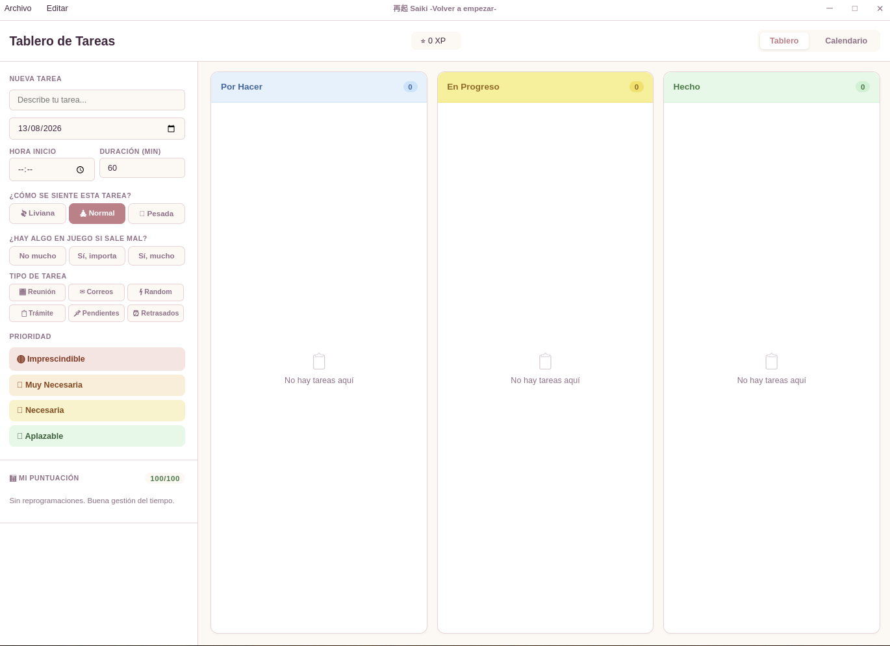
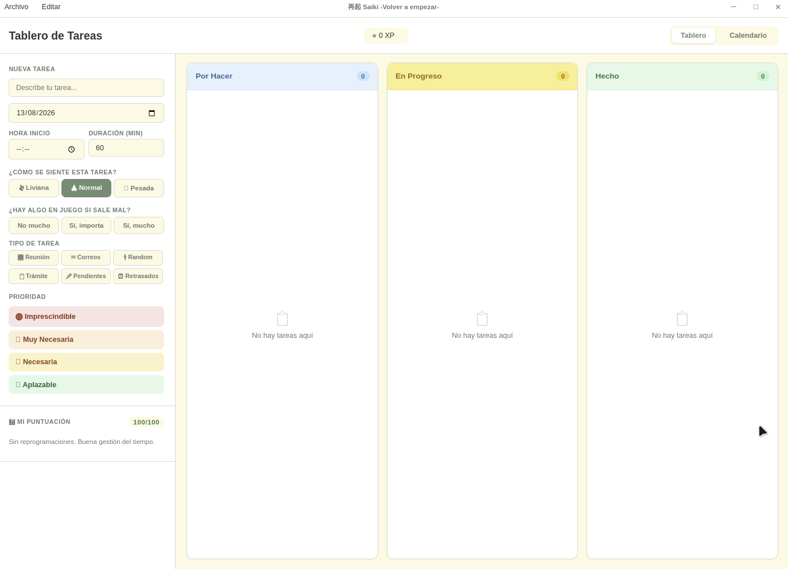
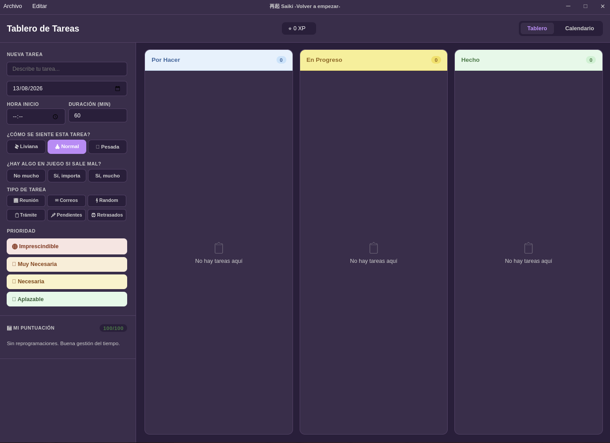

Límite de capacidad
Saiki te avisa cuando excedes tu capacidad antes de que sea tarde, en vez de dejarte acumular tareas sin freno.
El planificador que respeta tu capacidad real. Organiza tus tareas sin sobrecargarte, revisa tu mes y cierra cada semestre con claridad.
Comprar Saiki — USD 10.90 (pago único)Licencia de por vida. Sin suscripciones.
Saiki funciona distinto: te avisa cuando tu carga de tareas excede tu capacidad real, en vez de dejarte acumular pendientes hasta el agotamiento. Menos lista infinita, más control real sobre lo que puedes hacer.
Saiki te avisa cuando excedes tu capacidad antes de que sea tarde, en vez de dejarte acumular tareas sin freno.
Revisa qué pasó cada mes: qué se cumplió, qué se postergó y por qué.
El Gran Cierre Semestral te muestra métricas consolidadas y tu historial de camino cada seis meses.
Mueves tareas de fecha o cambias su prioridad sin perder el registro de por qué lo hiciste.
Saiki no es solo un tablero de tareas: su paleta de color refleja en qué estado de tu resiliencia personal estás, día a día.
Es el motor mental con el que esperas resultados favorables y confías en tu capacidad para superar los problemas, una capacidad que puedes aprender a desarrollar día a día.
Es la calma interior y el equilibrio mental que te permiten pensar con claridad cuando las cosas se complican, algo que puedes cultivar paso a paso en tu rutina.
Es la seguridad interna de que tienes los recursos necesarios para superar la adversidad, aunque a veces dudes de ti mismo.
Es la fuerza interior y la firmeza de ánimo que te permiten resistir la presión, soportar el sufrimiento y actuar de manera activa para superar los problemas, en lugar de rendirte.
Es tu capacidad para absorber un impacto o una perturbación externa sin mejorar, pero tampoco empeorar tu estado previo; simplemente sigues en pie, listo para dar el siguiente paso cuando puedas.



USD 10.90
Pago único. Sin suscripciones. 1 licencia = 1 dispositivo.
Comprar Saikilicense_key y el link de descarga del instalador.